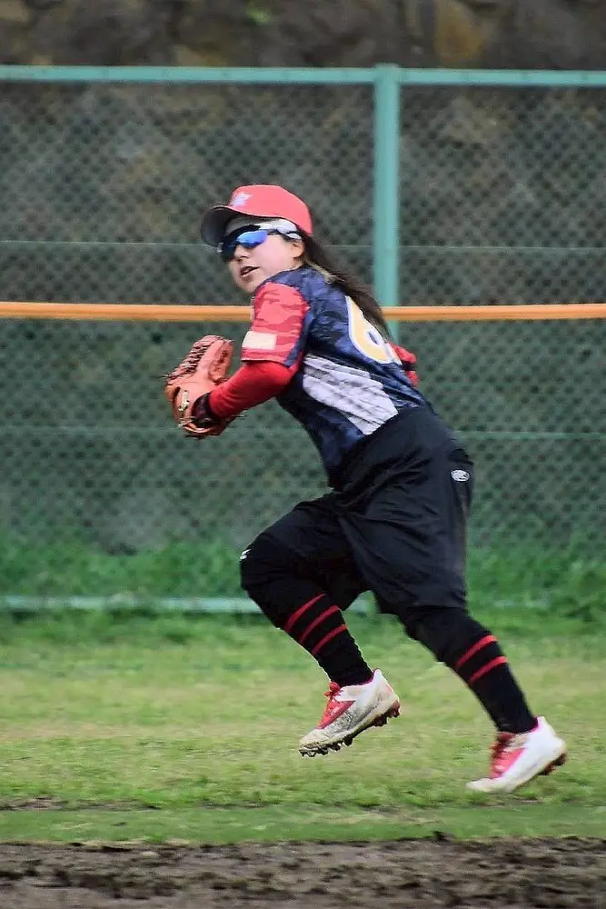
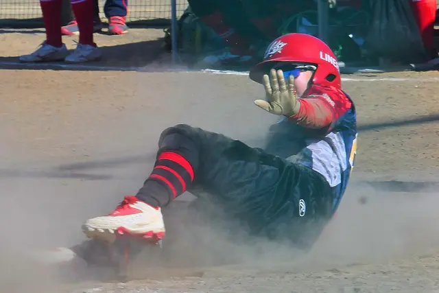
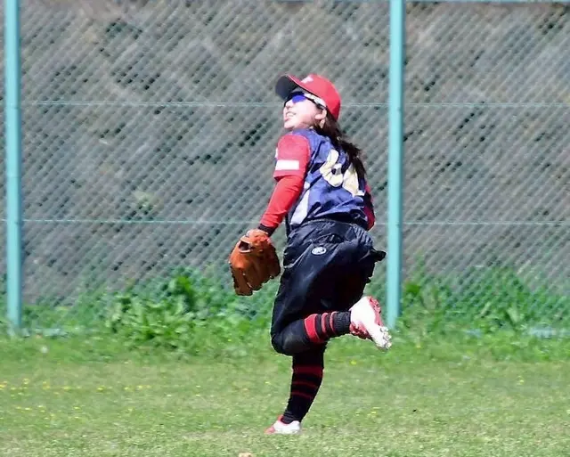
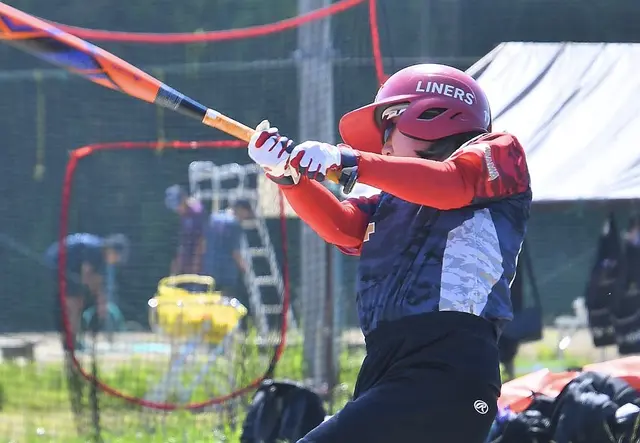
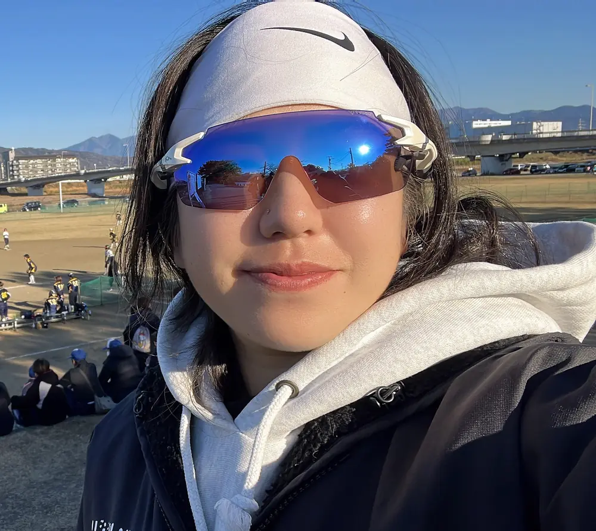

MEMBER INTERVIEW
A.M さん
メンバーインタビュー




INTERVIEW

A.M さん
2024年参加 20代 女性
参加したきっかけ
会社の元同僚からの紹介で参加しました。
好きな食べ物
ピッザマルゲリータ/ビール
趣味
セルフネイル
コメント
ライナーズに参加するまでは、約10年のブランクがありましたが、
毎週の練習に通ううちに、少しずつ感覚を取り戻していきました！
中には、中学生ぶりにソフトボールを再開したメンバーもいます。
「やってみたい！」その気持ちがあれば、いつからでも大丈夫。
始めるのに遅すぎることなんてありません！
今では、週末の練習が待ち遠しいくらい楽しみになっています
ソフトボールを通じて、自然と仲間が増えていくのもライナーズの魅力です！
あなたも一緒に、楽しく体を動かしてみませんか？
ご参加、お待ちしています！
横浜市港北区のライナーズで、
ソフトボールを楽しみませんか？
ライナーズ（LINERS）は、神奈川県横浜市港北区を中心に活動するレディース／エルダーソフトボールチームです。
経験やブランクを問わず、見学・体験を歓迎しています。参加をご希望の方は、InstagramのDMからお気軽にお問い合わせください。
\ チームメンバー募集中！ /
お問い合わせはこちら！